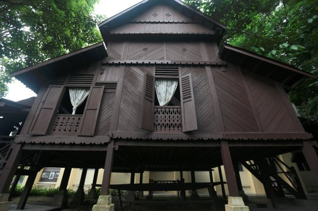

Rumah Dato’ Raja Diwangsa
Rumah ini terletak di Kampung Merual, Sei Menanti, Negeri Sembilan. Kedudukan rumah ini terletak bersebelahan dengan jalan utama Seri Menanti-Senaling. Rumah ini terletak di atas bukit serdahana tinggi, dan menghadap sawah padi yang terbentang luas, suatu ketika dahulu. Tiang-tiang utama rumah ini diperbuat daripada sepsis kayu yang berkualiti tinggi iaitu kayu Cengal Batu (Balanocapus Helmii) atau dikenali dengan nama tempatannya, ‘kayu penak’ sementara dinding dan lantai rumah diperbuat daripada kayu sepsis Meranti (shorea leprosula Miq).
Kembali